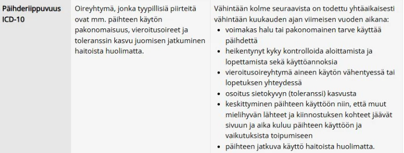
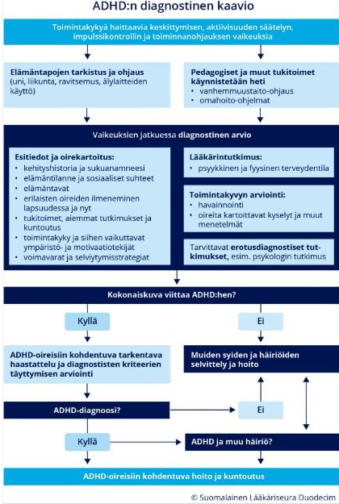
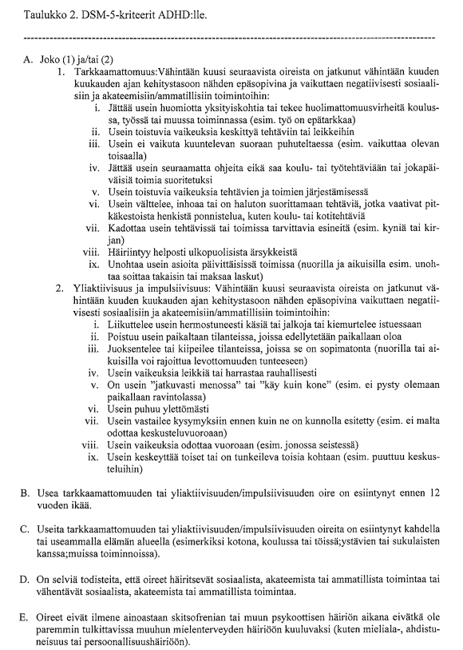
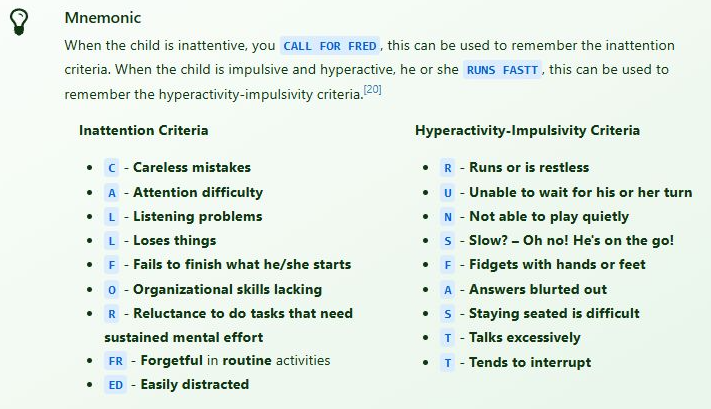

Kappale 4 2024
4.1 Blokki 1
Tärpit annettu yleispiirteisesti, ei tarkkoja kysymyksenasetteluja. Todennäköisesti ainakin pari samaa kysymystä, joita jo edeltävästi tässä kokoelmassa.
4.1.1 Bentsodiatsepiinien pitkäaikaiskäytön haitat?
Bentsodiatsepiinit ovat hyviä lääkkeitä lyhytaikaiseen kriisiapuun, mutta niiden pitkäaikaiskäyttö (yleensä yli 2–4 viikkoa) muuttaa lääkkeen luonnetta: auttajasta tulee usein ongelmien ylläpitäjä. Merkittävimpiä haittoja ovat mm:
4.1.2 Toistuva masennus. Mitä haluat kysyä lisää, mitkä masennuksen diagnostiset kriteerit täyttyvät?
Ei tarkempaa kysymyksenasettelua, joten käytetään tämä tilaisuus kertaamaan masennuksen diagnostiset kriteerit. Käy läpi päässäsi masennustilan diagnostiset kriteerit (ICD-10). Eroavatko ne toistuvasta masennuksesta?
Toistuvassa masennuksessa kriteerit ovat siis samat. Toistuva masennus (F33) vain tarkoittaa, että henkilö kokee useita erillisiä masennusjaksoja elämänsä aikana. Nykyinen voi olla ensimmäinen virallisesti diagnosoitu.
Alla olevan lisäksi erotusdiagnostiikassa tulee myös aina poissulkea kaksisuuntainen mielialahäiriö kartoittamalla aiemmin esiintyneitä maanisia/hypomaanisia oireita. Kaksisuuntaisen mielialahäiriön diagnostiikan apuna on suositeltavaa käyttää aiemmin esiintyneitä maanisia oireita kartoittavaa mielialahäiriökyselyä (MDQ).
On myös aiheellista selvittää, etteivät depression oireet johdu suoraan jostakin somaattisesta sairaudesta, kuten foolihapon tai B12-vitamiinin puutoksesta, sydän- tai aivoinfarktista, endokrinologisista häiriöistä (esim. hypotyreoosi), pahanlaatuisesta kasvaimesta tai neurologisesta sairaudesta taikka sairauden lääkehoidosta (esim. glukokortikoidit).
Lisäksi on suljettava pois potilaan päihteiden käytön (esim. alkoholi, kannabis tai amfetamiini) suoraan aiheuttamat depressiot.
Vinkki oireiden muistamiseksi: ne voi muistaa muistisäännöstä DIE-SGWCAPS (yleisesti nähty on SIGECAPS, mutta tämä DIE-SGWCAPS on optimoimani versio ICD-10-kriteereille).

4.2 Blokki 2
4.2.1 Alkoholiongelma
Akuuttivastaanotollesi TK:seen tulee kesän lopulla 52-vuotias mies, jolla ei ole tiedossa aiempia perussairauksia, ja jolla on muutenkin vain hyvin vähän käyntejä tk:ssa. Potilas on ammatiltaan hitsaaja, mutta hän on ollut nyt kesän ajan työttömänä. Kesän alussa potilaalle on tullut asumusero puolisonsa kanssa ja tämän jälkeen potilaan alkoholinkäyttö on lisääntynyt siten, että tämä on juonut parin kuukauden ajan päivittäin 10 puolen litran tölkkiä keskiolutta. Nyt tuttava on pyytänyt potilasta töihin ja potilas on sopinut aloittavansa tänään. Potilas kertoo yrittäneensä parin päivän ajan vähentää alkoholinkäyttöään, mutta tänään aamulla olon olleen niin hutera, ettei päässyt liikkeelle ja joutunut juomaan 2 tölkkiä olutta helpottaakseen hieman oloaan.
Vastaanotolla potilas antaa hieman levottoman ja ahdistuneen vaikutelman. Hän valittaa päänsärkyä ja pahoinvointia, mutta ei ole kertomansa mukaan oksentanut. Potilaan otsalle nousee suuria hikikarpaloita ja tämän kädet tärisevät. Hän on kuitenkin täysin orientoitunut, eikä vaikuta millään tavalla harhaiselta. Potilas kertoo, ettei juominen koskaan ennen ole tällä tavalla riistäytynyt käsistä, ja toivoo, että voisi saada jotakin apua ja pystyisi aloittamaan työt. Potilas kertoo mielihalujen jatkaa juomista olevan tällä hetkellä kovat, mutta uskoo itse niiden vähenevän, kunhan pääsee taas töihin. Hän kuitenkin kertoo, ettei tajunnut itse juomisensa menneen näin pitkälle, ja kysyy sinun mielipidettäsi siitä, kuinka paha hänen tilanteensa on?
- Miten haastattelet ja tutkit potilaan?
- Minkälaisen arvion teet (käytössä olevien tietojen valossa) potilaan alkoholiongelman vakavuudesta?
- Minkälaista hoitoa tarjoat potilaalle?
Alkoholinkäytön systemaattinen tarkentaminen on tärkeää. Tavoitteena on arvioida käytön määrä ja frekvenssi sekä arvioida riippuvuutta ja vieroitusoireita.
Tietysti pitää haastatella myös muiden päihteiden käyttö, käytössä olevat lääkkeet ja somaattinen anamneesi. Lisäksi kattava psykiatrinen selvittely: masennusoireet, ahdistusoireet, tukijoukot, aikaisemmat psykiatriset sairaudet/ongelmat, muut stressaavat tekijät elämässä kuin asumisero, motivaatio lopettaa?
Tutkimuksessa tärkeää arvioida vieroitusoireita (apuna CIWA-Ar-asteikko):
Potilaan alkoholinkäyttö on n. tasolla 15 annosta päivässä ja tämä kestänyt n. pari kuukautta. Vieroitusoireita jo parin päivän vähentämisen jälkeen ja tarvinnut korjaussarjan aamulla. Voimakas juomishimo. Kontrollin menetystä. Tilanne sopii alkoholiriippuvuudeksi, jonka yhteydessä on tällä hetkellä lieviä-keskivaikeita vieroitusoireita.

Työdiagnoosi on alkoholiriippuvuus ja alkoholin vieroitustila.
Välittömänä hoitona annetaan potilaalle tiamiinia lihakseen 250 mg (125 mg kumpaankin pakaraan) ja tätä annetaan kolmena päivänä peräkkäin. Vasta tiamiinin ensimmäisen annoksen jälkeen potilas saa syödä (muuten voisi tulla laukaistua Wernicken enkefalopatia). Annetaan myös suullinen ajokielto, koska ei ole ajokunnossa tällä hetkellä.
Vieroitusoireiden hoitoon voidaan tarjota bentsodiatsepiinilääkitystä; esim. diatsepaami 5-10mg x 1-3/vrk (yleensä lieviin tai keskivaikeisiin vierotusoireisiin annetaan klooridiatsepoksidia (25 - 50 mg × 2 - 4) pienenevin annoksin 3 - 5 vuorokauden ajan). Potilaalla ei kyllä vaikeita vieroitusoireita ole (yli 20p), eikä siten todennäköisesti tarvitse sairaalahoitoa ja seurantaa. Avovieroituksen toteutumista helpottaa, jos potilaalla on kotona joku selvänä oleva tukihenkilö. Avovieroituksen aikana käydään päivittäin vastaanotolla, kunnes lääkehoidon tarve on ohi, yleensä 3 - 5 päivän ajan. Käynneillä tutkitaan potilaan tila, hänet puhallutetaan ja vieroitusoireita arvioidaan CIWA-Ar-lomakkeella.
Oireenmukainen hoito: Jos merkittävää takykardiaa -> beetasalpaaja; jos merkittävää pahoinvointia -> metoklopramidi.
Annetaan myös nesteytysohje potilaalle: suun kautta vähintään 3 litraa vuorokaudessa kivennäisvettä, piimää, maitoa tai urheilujuomaa.
Jatkohoidon kannalta on tärkeää selittää potilaalle, että kyseessä on elimistön reaktio alkoholin lopettamiseen ja kertoo alkoholinkäytön häiriöstä. Keskustellaan alkoholinkäytöstä ja turvarajoista sekä alkoholin yhteydestä sairauksiin.
Jatkohoitona on mahdollista tulla vastaanottokäynneille uudestaan, esimerkiksi hoitajalla tai jopa lääkärillä tarvittaessa. Potilaan kannattaisi pitää juomapäiväkirjaa, jotta saadaan tarkempi käsitys juomisesta (kannustetaan kuitenkin juomisen lopettamiseen kokonaan; tietysti potilas asettaa absoluuttisen tasoitteen ja vähentäminenkin on hyvä tavoite).
Omahoidon neuvominen on tärkeää, esim. Paihdelinkki.fi tai Mielenterveystalo.fi
Psykososiaalisen hoidon kannalta on monia hoitovaihtoehtoja: päihdehoitajat, lähetteen vaativa nettiterapia, miepä-yksikköön ohjaus ja siellä vastaanotto, psykoterapiat, AA-toiminta, A-klinikka, yhteisovahvistusohjelma (CRA)…
Lisäksi voidaan tarjota lääkehoitoa alkoholiriippuvuuden hoitoon; ensilinjassa voidaan ehdottaa disulfiraamia (antabus, pahoinvointi juodessa) tai opioidiantagonistia (himon vähentäminen). Näiden aloittamista ennen (ja seurannassakin) tietysti maksa-arvojen (ALAT ja GT) tarkastaminen; akamprosaattia voi käyttää, jos maksa-arvot pielessä. Parhaat tulokset on saatu yhdistämällä lääkehoitoon retkahdusten estoa ja alkoholin käytön hallintaa opettavia menetelmiä sekä perhe- ja verkostoterapiaa.4.2.2 Aikuisten ADHD
- Aikuisen tarkkaamattomuus- ja keskittymisoireiden tutkiminen perusterveydenhuollossa
- Aikuisen ADHD-epäilyn tutkimusprosessin porrastus perusterveydenhuollon ja erikoissairaanhoidon välillä
- Aiemmin toteamattoman ADHD:n diagnoosin asettamisen edellytykset aikuisella
(Käytännössä hyvin samanlainen kysymys kokonaisuudessaan kuin vuoden 2025 blokin 1 tentissä, mutta on kuitenkin sen verran erilainen, että kysymys kannattaa ottaa kokonaisuudessaan tähänkin.)
ADHD:n diagnostiikassa yleisesti olennaista on ajatella: “Sopiiko nykyinen oirekuva ADHD:seen?” ja “Voiko oirekuvaa selittää jokin muu sairaus/päihdehäiriö/mikä tahansa syy?”. Ensimmäisellä visiitillä voi hyvinkin tehdä kattavan yleispsykiatrisen tutkimuksen, seuloa ADHD:n oireita (esim. ASRS-seula), poissulkea yleisimpiä muita taustahäiriöitä (esim. masennus, ahdistuneisuus, päihdehäiriöt, somaattiset syyt kuten uniapnea, kilpirauhasen toimintahäiriö; tarvittaessa siis labroja myös) ja kartoittaa elämäntapoja. Elämäntapojen ohjausta tulee myös heti harrastaa (esim. unen, liikunnan, ravitsemuksen ja älylaitteiden käytöstä ohjeistusta) ja aloittaa myös tarvittaessa muitakin tukihoimia. Vaikeuksien jatkuessa sitten tarkempi diagnostinen arvio ADHD:n suhteen. Jos oireet ovat todella vaikeat, tulisi ADHD:n arviointi ja hoito aloittaa nopeasti eikä odottaa pitkään mahdollisen tukitoimien tepsimistä. Ne tulee kuitenkin aloittaa diagnostiikan aloittamisesta riippumatta, sillä hyvät elintavat ja ohjeet parempaan toimintaan ovat hyödyllisiä kaikille.
Tarkempaa diagnostista arvioita ei voida suorittaa pelkän kyselylomakkeen avulla, vaan se tehdään kattavan haastattelun pohjalta. Apuna voi käyttää mm. DIVA-5-puolistrukturoitua haastattelua, mutta sekään ei ole täydellinen itsenään. Aikuisten ADHD:n diagnostiikassa on se tärkeä muistettava asia, että ADHD:n oireiden on tullut olla läsnä jo ennen ikävuotta 12, joten jos kyseessä on jo toinen vastaanotto, potilaan on voinut viime kerralla pyytää tuomaan mukanaan mahdollisia koulutodistuksia, aikaisempia lausuntoja yms., joista voisi arvioida lapsuuden oireita objektiivisesti. Mukaan vastaanotolle voi myös tulla potilaan vanhempi (usein kuitenkin tehokkaampaa vain soittaa vanhemmille vastaanoton jälkeen ja kysellä lapsuudesta). Niissä tapauksissa, kun mitään objektiivista lähdettä tai informanttia ei ole käytössä, niin tulee luottaa vain potilaan kertomaan lapsuudestaan. Tässä voi käyttää apunaan WURS-kyselyä (vanhemmatkin voivat täyttää, mutta käytännössä aikuiset usein täyttävät lomakkeen itse pohjautuen omiin muistikuviinsa lapsuudesta)

Aikuispotilaan komplisoitumattoman (ei rinnakkaishäiriöitä) ADHD-diagnostiikkaa voidaan toteuttaa perusterveydenhuollossakin ihan yleislääkärin toimesta, mutta aina tulisi olla mahdollisuus konsultoida psykiatrian alojen erikoislääkäriä. Muuten diagnostiikka ensisijaisesti psykiatrian erikoissairaanhoidossa, esimerkiksi neuropsykiatrian poliklinikalla. Psykiatrian alojen erikoislääkärin konsultaatio on oikeastaan välttämätön, jos aloitetaan ADHD-lääkehoito, ja aloittava lääkäri ei ole erikoislääkäri.
Erikoissairaanhoidon vastuulla ovat erikoissairaanhoitoa tarvitsevien potilaiden erotusdiagnostiset selvittelyt ja niihin kuuluvat lisätutkimukset, vaativien lääkehoitojen aloittaminen, vaativan hoidon ja kuntoutuksen suunnittelu sekä jatkohoidosta ja -seurannasta sopiminen. Erikoissairaanhoidon arviota tarvitaan, jos
Ajatellen tarkemmin niitä asioita, joita potilaalta kysytään ja selvitetään (esim. DIVA-5:n aikana), ne perustuvat pitkälti ADHD:n diagnostisiin kriteereihin (alla kuva). Tulee siis määrittää, että:

Jos haluaa muistaa kaikki DSM-5-luokituksessa arvioitavat oireet, voi ne muistaa muistisäännöistä CALLFORFRED ja RUNSFASTT:

4.2.3 M1
Äiti saattaa 18-vuotiaan nuoren miehen yhteispäivystykseen ja kertoo olevansa huolissaan poikansa ahdistusoireista. Haastattelussa käy esille, että peruskoulun päätettyään nuori aloitti sähköalan opinnot, mutta nämä keskeytyivät jo toisena lukuvuonna. Äiti kuvaa nuoren olleen aina ujo ja saamiesi lisätietojen perusteella arvioit hänen kärsineen yläasteikäisenä vaikeasta esiintymisjännityksestä. Pidät mahdollisena, että nuorella on ollut tuolloin masennusoireitakin. Ammattiopinnot käynnistyivät takellellen ja jo ensimmäisenä lukuvuonna nuorella oli runsaasti poissaoloja ahdistuneisuusoireiden vuoksi. Heti toisen lukuvuoden alusta poissaolopäiviä opiskeluista kertyi enemmän kuin läsnäoloa ja lopulta nuori jättäytyi opinnoista kokonaan pois.
Äiti kertoo yrittäneensä aluksi niin kiristämällä kuin lahjomalla saada nuorta liikkeelle, mutta sittemmin hän luovutti ja ajatteli tilanteen helpottavan, kun nuori saa etäisyyttä ahdistavaan kouluympäristöön. Kavereita äiti kuvaa nuorella olleen aina niukasti eikä varsinaisia harrastuksiakaan ole oikeastaan ikinä ollut, joten mitään varsinaisia muutoksia ei äidin mukaan näillä rintamilla ole tapahtunut. Äiti kertoo huolensa nuoren tilanteesta kuitenkin lisääntyneen viime aikoina. Nuori ei ole ollut enää lainkaan halukas poistumaan kotoa. Aiemmin nuori seurasi kiinnostuneena tiettyjä tubettajia, mutta viime aikoina eivät nekään ole innostaneet ja hän on lähinnä makaillut sängyssään. Äiti on erityisen huolissaan siitä, että hän on yöaikaan kuullut nuoren kuljeskelevan huoneessaan ja muutaman kerran ikään kuin puhettakin. Nuori ei myöskään äidin mukaan enää käy suihkussa oma-aloitteisesti ja äiti epäilee, että hän on laihtunutkin.
Haastattelussa nuori on lyhytsanainen ja tekee jännittyneen vaikutelman. Hän miettii jokaista kysymystäsi pitkään katse maahan luotuna ja haastavammissa kysymyksissä katsoo vetoavasti äitiinsä. Kysymyksiin mahdollisista harha-aistimuksista hän ei vastaa lainkaan, tuijottaa vain kiinteästi työhuoneesi nurkkaan. Äiti toivoo kovasti nuorelle apua, mutta nuori itse ehdottomasti kieltäytyy kaikesta ehdottamastasi avusta päätään tiukasti pudistellen.
Jos M1-lähete on mielestäsi tarpeellinen, täytä liitteenä olevaan M1-lähetteeseen kaikki tarpeelliset tiedot siten, että lähete on juridisesti pätevä ja johdonmukainen. Jos M1-lähete ei ole mielestäsi tarpeellinen, kuvaa esseevastauksessa tahdosta riippumattoman hoidon kriteerit ja arvioi kriteerien täyttyminen nuoren kohdalla.
Tenttivastauksen ulkopuolelta taas M1-kertausta
Potilas on täysi-ikäinen, joten pitää soveltaa täysi-ikäisen tahdosta riippumattoman hoidon kriteerejä:
- Hänen todetaan olevan mielisairas.
- Hän on mielisairautensa vuoksi hoidon tarpeessa siten, että hoitoon toimittamatta jättäminen olennaisesti pahentaisi hänen mielisairauttaan tai vakavasti vaarantaisi hänen terveyttään tai turvallisuuttaan tai vakavasti vaarantaisi muiden henkilöiden terveyttä tai turvallisuutta.
- Mitkään muut mielenterveyspalvelut eivät sovellu käytettäväksi tai ovat riittämättömiä
Lääketieteellisesti mielisairaudella tarkoitetaan sellaista vakavaa mielenterveyden häiriötä, johon liittyy selvä todellisuudentajun häiriintyminen ja jota voidaan pitää psykoosina. Nykyisen tautiluokituksen mukaan tällaisena tilana voidaan pitää deliriumtiloja, skitsofrenian eri muotoja, elimellisiä ja muita harhaluuloisuustiloja, psykoottisia masennustiloja, kaksisuuntaisia mielialahäiriöitä, muistisairauksien vaikea-asteisia ilmenemismuotoja sekä muita psykooseja kuten orgaaniset psykoosit ja päihteiden käytön aiheuttamat psykoottiset tilat.
On tärkeää huomata, että M1-lähetettä tehdessä potilasta ei siis lähetetä suoraan tahdosta riippumattomaan hoitoon, vaan hänet lähetetään psykiatriseen arvioon tahdosta riippumatta. M1-lähetteen tekijän ei siis tule olla täysin varma siitä, että potilaalla olisi mielisairaus - epäily siitä riittää! Päivystäjä haastattelee potilaan ja arvioi, täyttyvätkö tahdosta riippumattoman hoidon perusteet todennäköisesti. Jos täyttyvät todennäköisesti, niin potilas otetaan tarkkailuun. Tarkkailuaika on korkeintaan hoitoontulopäivä + 4 päivää -> Tarkkailun päätteeksi osastonlääkäri tekee M2-lausunnon (kriteerien perusteet ovat samat kuin M1-lähetteessä). M2 perustellaan huolellisesti, täyttyvätkö edellytykset tahdosta riippumattomalle sairaalahoidolle. Lisäksi selvitetään potilaan oma mielipide hoidon tarpeesta. Mikäli edellytykset täyttyvät, tekee psykiatrisesta hoidosta vastaava ylilääkäri hoitoonmääräämispäätöksen M3, jossa otetaan yksiselitteinen kanta, määrätäänkö potilas tahdosta riippumattomaan hoitoon vai ei. Tahdosta riippumatonta hoitoa voidaan jatkaa M3-päätöksellä korkeintaan 3 kuukautta. Eli prosessi on M1->tarkkailu->M2->M3. M1-lähetteen tekijä (usein TK-lääkäri) arvioi, täyttyvätkö tahdosta riippumattoman hoidon kriteerit todennäköisesti eli epäily riittää. Varmuuden odotetaan kasvavan M-prosessin edetessä.
4.3 Blokki 3
4.3.1 Skitsofrenikko seurantakäynnillä
Terveyskeskuksen seurantakäynnille tulee 53-v. skitsofreniaa sairastava yksin asuva nainen, joka on sairastunut jo 25 v sitten. Potilasta on alkuun hoidettu erikoissairaanhoidossa, mutta oireilu on ollut jo jonkin aikaa siinä määrin lievempää ja vakaassa vaiheessa, että potilaan seuranta on sovitusti siirretty perusterveydenhuollon yksikköön.
Antipsykoottiseksi lääkitykseksi on muodostunut olantsapiini 15 mg/vrk, jolla on ollut erinomainen vaste psykoosioireisiin. Muu lääkitys on essitalopraami 10 mg/vrk ja oksatsepaami 15 mg x 1-2 /vrk tarv. Potilas on ollut somaattisesti yleensä terve lukuun ottamatta ajoittain kohonneita verenpainearvoja. Potilas kertoo vastaanotollasi, että hän on lihonnut pikkuhiljaa noin 10 kg ja yhdistää painon nousun olantsapiini-hoitoon. Potilaan paino on nyt 92 kg, pituus 166 cm. Asia harmittaa potilasta ja hän on miettinyt kyseisen lääkityksen tarpeellisuutta.
Miten vastaat potilaan huoleen? Kuvaa selvityksiäsi/hoitolinjauksiasi perusteluineen eli miten toimit tässä tilanteessa
Potilaan huoleen voi vastata suoraan myöntämällä, että “Kyllä, olantsapiini aiheuttaa usein ruokahalun kasvua ja aineenvaihdunnan hidastumista ja siten painonnousua”. Olantsapiini ja klotsapiini ovat ne psykoosilääkkeet, jotka aiheuttavat useimmin metabolisia haittavaikuksia ja se tulee aina muistaa lääkkeitä käyttävillä. Tulee kuitenkin myös kertoa, että psykoosilääkitys on yleensä hyvin pitkäkestoinen ja uusiutumisvaiheita estävää psykoosilääkehoitoa tulisi jatkaa ensipsykoosissa ainakin 2 v, jos ≥ 2 episodia -> 5 v, nykyään usein pysyvä lääkitys nimenomaan uusien sairausepisodien ehkäisemiseksi, koska pitkäkään lääkehoito ei suojaa psykoosijaksojen relapsilta lääkehoidon lopettamisen jälkeen.
Potilaalta tulee kysellä sairastetuista psykoosijaksoista: kuinka monta, milloin viimeksi (lisäksi tietysti tulee lueskella papereita läpi). Todennäköisesti lääke on määrätty hänelle ESH:ssa pysyväksi eikä sen alas ajaminen ole järkevää, mutta asiasta voi tietysti konsultoida. Joka tapauksessa lääkitystä ei saa lopettaa nopeasti.
Selvitellään myös painonnousun historiaa ja sen taustatekijöitä: kuinka nopeasti, onko jotain muutoksia tapahtunut elintavoissa, miten nukkuu, miten syö, miten liikkuu, tupakointi, päihteiden käyttö?
Myös kysellään muista oireista: onko lisääntynyttä virtsantarvetta (diabetes), uusia psyykkisiä oireita, uusia somaattisia sairauksia? Tietysti myös kartoitetaan elämän stressiä ja arvioidaan sen yhteyttä painonnousuun.
Tulee myös tutkia skitsofreniapotilaan somaattisen vuosikontrollin tapaan lipidit, verensokeri (gluk/ HbA1c), RR ja syke, vyötärönympärys, paino (mitattu jo), EKG, ALAT, PVK.
Toiminta selvittelyiden jälkeen:
4.3.2 Eläkeikäinen asialla ahdistuksen/lääkitysasioiden parissa
Vastaanotollesi tulee lähes eläkeikäinen potilas, joka on varannut ajan lääkitysasioista ja ahdistuksesta keskustellakseen. Tarkentaessasi esitietoja potilas kertoo ahdistuksen lisääntyneen hiljalleen niin, että pahin vaihe on jatkunut jo ainakin muutaman kuukauden ajan. Ahdistuksen lisäksi potilas kertoo keskittymiskykynsä heikentyneen ja esim. autoa ajaessa reaktionopeus tuntunut jotenkin aiempaa hitaammalta. Potilas alkanut viime viikkoina myös nukkua huonommin. Kotonakin tullut riitoja puolison kanssa hermojen ollessa jatkuvasti kireänä ja läheiset ilmaisseet huolensa tilanteesta. Elämänlaatu tuntunut potilaan mukaan heikkenevän kokonaisvaltaisesti ilman selkeää syytä. Potilas myöntää alkaneensa ”itselääkitä” pahaa oloaan alkoholilla, jota nyt juonut selkeästi aiempaa enemmän. Toivoisi apua alkoholinkäytön vähentämiseen.
Vastaanotolla havainnoiden potilas vaikuttaa mielestäsi kontaktissa jotenkin hidastuneelta ja jopa hivenen tokkuraiselta. Lääkityksenään hän kertoo käyttäneensä jo 90-luvulta lähtien alpratsolaamia annoksella 2 mg 1x2 ja unta tukemaan diatsepaamia annoksella 10 mg 1x1 päivittäin. Lääkkeet määrätty aikanaan paniikkihäiriötä lievittämään ja ne aloittanut psykiatrian professori. Potilas kokee lääkkeiden sopineen itselleen hyvin, joskin kertoo joutuneensa nostamaan annoksia noin puoli vuotta sitten, koska kokenut niiden tehon jotenkin heikenneen. Potilas yrittänyt tuloksetta varata sinulta aikaa jo kuukausia sitten ja toivoo, että vastaanotolle nyt vihdoin päästyään annosmuutos voitaisiin tehdä virallisesti myös reseptiin. Käyttänyt alpratsolaamia kertomansa mukaan annoksella 2 mg 1x4 ja diatsepaamia annoksella 40 mg 1x1 päivittäin, muttei oikein koe vointiaan näilläkään hyväksi ja toivoisi, että annoksia voitaisiin tehostaa edelleen. Lääkkeistä muodostunut potilaalle tämän omia sanoja lainaten elintärkeä.
- Mitä taustatietoja haluaisit vielä kartoittaa?
- Minkä asetat potilaan työdiagnoosiksi ja millä perustein?
- Millaisen hoitosuunnitelman laatisit ja miten perustelisit asian potilaalle?
Hyvin samanlainen tapaus kuin 2025 blokki 1 tehtävä 1. Tässä erona on vain se, että potilas myös juo alkoholia, joka on tietysti bentsojen kanssa erityisen vaarallista.
On tärkeää tarkentaa mm. seuraavat asiat:
Ensisijainen työdiagnoosi on bentsodiatsepiiniriippuvuus. Potilaalla on pitkäkestoista käyttöä, mutta tärkeimpinä piirteinä on:
Hoitosuunnitelmassa on tärkeää lähteä ottamaan riippuvuutta haltuun, eikä annoksen nostaminen nyt ole tässä tilanteessa oikea ratkaisu potilaalle. Potilaan kanssa tulee käydä läpi, että oireet todennäköisesti johtuvat bentsojen suuresta käytöstä ja tärkein hoito tässä vaiheessa on hallittu vieroitus niistä pois avohoidossa. Tavoitteena on palauttaa potilaan työkyky, elämänilo ja parantaa unen laatu, jota nykyinen lääkitys itse asiassa rikkoo.
Äärimmäisen tärkeää on myös kieltää potilasta nauttimasta alkoholia. Alkoholi bentsojen kanssa on hyvin vaarallista ja voi helposti johtaa hengityslamaan.
Bentsoja ei saa lopettaa seinään (kouristusvaara, delirium). Lääkelaskun aloitusannosta varten arvioi potilaan käyttämä bentsodiatsepiiniannos/vrk. Mikäli potilas käyttää useita eri bentsodiatsepiinivalmisteita, laske kokonaisvuorokausiannos diatsepaamiekvivalenttiannoksena (taulukoita apuna, ei tarvitse ulkoa osata). Lääkkeen purkaminen pyritään toteuttamaan yhdellä bentsodiatsepiinivalmisteella (esimerkiksi oksatsepaami tai diatsepaami), eli vaihdetaan potilaan nopeavaikutteisemmat valmisteet pidempivaikutteisemmaksi diatsepaamiksi. Bentsodiatsepiinilääkitys puretaan laskemalla vuorokausiannosta 10–25 % kerrallaan 1–3 viikon välein. Voinnin tarkistus ja kannustus ensimmäisen annoslaskun jälkeen joko vastaanotolla tai puhelimitse. Jos annoslaskun jälkeen ilmenee vieroitusoireita, ei nosteta annosta, vaan hidastetaan laskutahtia. Vieroitusoireita voidaan arvioida käyttämällä CIWA-B-lomakkeita.
Motivointi ja psykososiaalisen tuen antaminen ovat oleellinen osa hoitoa. Kognitiivisen käyttäytymisterapian liittäminen lääkelaskuun parantaa hoitotulosta. Unettomuuden hoidossa CBT-i ja mahdollisesti jopa muu unilääke, kuten pieniannoksinen doksepiini tarvittaessa.4.3.3 Professori tyttären huolen takia vastaanotolla
67-vuotias kolme vuotta aiemmin eläkkeelle jäänyt professori tulee vastaanotollesi tyttärensä kehotuksesta. Hänellä on verenpainetauti, joka on ollut lääkehoidolla tasapainossa. Ei aiempia psykiatrisia hoitoja. Potilas on jäänyt leskeksi kahdeksan kuukautta sitten, ei muita isoja elämänmuutoksia lähihistoriassa. Aikuinen sairaanhoitajatytär on kehottanut potilaan lääkärin vastaanotolle, sillä hän on ollut huolissaan potilaan jaksamisesta, ja epäilee tällä pitkittynyttä surureaktiota. Tämä potilaan ainut lapsi asuu ulkomailla, ja he ovat tavanneet viimeksi potilaan puolison hautajaisissa, mutta tytär pitää viikoittain puhelimitse yhteyttä vanhempaansa. Tytär on nyt pyytänyt potilasta kertomaan, ettei potilas aiempaan tapaan enää käy ulkona, harrasta, tai ole aloitteellinen sosiaalisten suhteiden suhteen.
Kyselet potilaalta hänen voinnistaan, päiviensä kulusta ja mielialasta. Jäät vaikutelmaan, että hänen on vaikea arvioida mielialaansa. Hän kertoo kuitenkin kykenevänsä nauttimaan hyvästä musiikista ja kevään tulosta. Kiinnostus muihin ihmisiin on hieman laskenut. Kun kysyt nukkumisesta, hän kertoo, että herää usein öisin, mutta saa kyllä uudelleen unen päästä kiinni, ja kokee nukkuvansa yhteensä riittävästi, vaikka välillä onkin tarvetta myös päiväunille. Ruokailusta kysyttäessä hän kertoo, ettei ole juuri tullut laittaneeksi itselleen ruokaa, sillä se oli aiemmin puolison tehtävä, ja potilaan painokin on nyt saattanut siksi päästä putoamaan, vaikka ruokahalu olisikin ihan hyvä. Potilas kertoo käyvänsä pitkillä kävelyillä, lisäksi päivät koostuvat pitkälti television katselusta ja lehtien lukemisesta. Hän on huomannut ”ehkä lieviä” ongelmia keskittymiskyvyssään. Niin ikään aloitekyvyssä hän kokee jonkin verran vaikeutta, mutta kertoo kyllä sitten saavansa asiat, kuten suihkussa käymiset ja siivoamisenkin hoidetuiksi, kun vain saa aloitetuksi.
Statuksessa potilas on hoikka ja hieman hoitamattoman oloinen, vaatteissa on ruokatahroja. Antaa etenkin alussa jännittyneen vaikutelman, mutta tulee sitten mukavasti vuorovaikutukseen, ja vastailee hieman ympäripyöreästi, mutta adekvaatisti esitettyihin kysymyksiin. Hän on orientoitunut, joskin päivämäärä menee muutamalla vuorokaudella pieleen. Psykomotorisesti hän on jkv levoton, näprää vaatteitaan ja tarkistelee taskukalenteriaan. Kasvojen ilmeikkyys on normaalin rajoissa. Affekteja ei juuri tule esille, joskin naurahtaa vitsillesi. Puheen tempo on tavallinen, ei merkittävää vastauslatenssia, välillä hakee pidempään sanoja. Ei tule vaikutelmaa aistiharhoista tai harhaluuloista.
- Listaa lyhyesti perustellen erotusdiagnostiset vaihtoehdot (enintään viisi vaihtoehtoa)
- Millä kysymyksillä tarkentaisit anamneesia ja/tai miten muutoin ohjaisit vastaanottoa, parantaaksesi myös mahdollisuuksiasi täydentävien statushavaintojen tekemiseen?
- Mitä lisäselvityksiä ja -tutkimuksia ohjelmoisit jatkoon?
- Laihtuminen, itsehoidon laiminlyönti, aloitekyvyttömyys, unihäiriöt, keskittymiskyvyn ongelmat viittaavat masennukseen
- Sosiaalinen vetäytyminen ja aktiivisuuden väheneminen alkanut puolison menetyksen jälkeen. Pitää kysellä tarkemmin ajatuksista ja oireiden ajoituksesta, jotta voidaan mahdollisesti erottaa masennustila enemmänkin surureaktioon liittyvistä mielialaoireista. Suru ei kuitenkaan sinänsä poissulje masennusta.
- Ikä 67 v, keskittymisvaikeus, päivämäärän sekoaminen, aloitekyvyn heikkeneminen, ulkoisen olemuksen hoitamattomuus ja sosiaalinen isolaatio -> yleisiä piirteitä muistisairauksille
- Eläkkeelle jääminen ja leskeytyminen ovat riskikohtia. Alkoholin runsas käyttö voisi selittää laihtumisen, vapisevan levottomuuden, muistivaikeudet ja “huolittelemattoman” olemuksen.
- Tahaton laihtuminen, kognitiivinen hidastuminen; fyysiset syyt tulee poissulkea
- Myös mahdollisista infarktioireista tulee kysellä; esim. aivoinfarktiin tai sydäninfarktiin viittaavaa
Kannattaa kysyä erityisesti:
Vastaanotolla tulee antaa aluksi avoimia kysymyksiä, jotta voi arvioida potilaan kyvykkyyttä vastata vaikeampiin kysymyksiin. Kontakti tulisi myös olla aseteltu niin, että katsekontaktin ottaminen on helppoa ja siten voisi tätäkin arvioida. Voi myös ns. “takavarikoida” kalenterin hetkeksi, jotta voi nähdä miten potilaan psykomotoriikka reagoi siihen ja samalla voi arvioida potilaan tapahtumamuistia ilman kalenteriin turvautumista. Voidaan myös pyytää potilasta piirtämään kellotaulu, joka paljastaa toiminnanohjauksen ja visuospatiaaliset häiriöt paljon paremmin kuin pelkkä keskustelu.
Tietysti statukseen kuuluu myös neurologian arviointi, joten tehdään mm. Rombergin testi, peruskoe, aivohermostatus, raajavoimat, DDK, SNK…4.3.4 M1
Työskentelet yhteispäivystyksessä, jonne saapuu äitinsä saattamana 17-vuotias nuori nainen. Vastanottohuoneessa äiti purskahtaa välittömästi itkuun. Hän kertoo nuoren opiskelevan toista vuotta merkonomiksi. Vielä ensimmäisenä lukuvuonna nuori tapasi säännöllisesti ystäviään ja kävi erilaisissa riennoissa. Syksyn myötä nuori löytyi viikonloppuiltaisinkin entistä useammin omasta huoneestaan. Äidin kysyessä asiasta nuori oli lähinnä todennut, ettei kavereilla ole aikaa hänen kaltaiselleen luuserille.
Äidin kannustuksesta huolimatta nuori muuttui vähitellen entistä passiivisemmaksi. Äidin kyselyihin nuori kuitenkin vastasi koko ajan ärtyisämmin, joten äidistä tuntui lopulta viisaammalta jättää hänet rauhaan. Hymähtäen äiti kertoo, kuinka aiemmin heidän tavanomainen riidanaiheensa oli nuoren meikkeihin käyttämä omaisuus, mutta nyt hän on suurimman osan ajasta meikittä ja hiuksetkin näyttävät pesemättömiltä. Muutos on tuntunut niin dramaattiselta, että äiti on useasti ehdottanut avun hankkimista, mistä nuori on ehdottomasti kieltäytynyt.
Nyt päivystykseen tuloa edeltävästi äiti kertoo nuoren huonetta siivotessaan löytäneensä hänen patjansa alta kourallisen lääkkeitä. Äiti sairastaa epilepsiaa ja muistelee aiemmin ihmetelleensä, että lääkkeitä oli vähemmän kuin mitä hän ajatteli, ja asia palasi mieleen hänen nähdessään tutut tabletit. Äidin otettua asian puheeksi nuori raivostui asiasta. Vaatiessaan haluavansa tietää, miksi nuori oli kerännyt lääkkeitä, nuori oli ärähtänyt aikovansa tappaa itsensä ja mennyt oven paiskaten huoneeseensa. Pitkän neuvottelun jälkeen nuori tuli huoneestaan myrskyn merkkinä sanoen ”No, lähdetään sitten sinne päivystykseen”.
Haastattelussa nuori ei juuri ota katsekontaktia ja on kiukkuisen oloinen. Hän vastailee kysymyksiin lyhytsanaisesti. Kerronta on johdonmukaista etkä totea psykoottisuuteen viittaavaa. Nuori ei kiistä äidin kertomia asioita, mutta hän ei tunnista mielialaansa masentuneeksi. Kysymyksiisi itsetuhoisista ajatuksista ja käyttäytymisestä nuori ei vastaa, mutta itsemurhasuunnitelmasta kysyttäessä ärähtää sellaisen kyllä olevan, mutta hän ei aio kertoa siitä mitään. Kerrot olevasi huolissasi nuoresta, mutta hän tyrmää ehdotuksesi lääkehoidosta ja osastohoidosta, avohoidon käynneistä kysyttäessä toteaa, että ”no en vittu tiedä”.
Jos M1-lähete on mielestäsi tarpeellinen, täytä liitteenä olevaan M1-lähetteeseen kaikki tarpeelliset tiedot siten, että lähete on juridisesti pätevä ja johdonmukainen. Jos M1-lähete ei ole mielestäsi tarpeellinen, kuvaa esseevastauksessa tahdosta riippumattoman hoidon kriteerit ja arvioi kriteerien täyttyminen nuoren kohdalla.
Ennen lähetteen täyttymistä pitää vahvasti keskutella läpi avohoidon käyntien mahdollisuus. Jos potilaan saisi hyväksymään avohoidon, niin silloin M1-kriteerit eivät täyttyisi. Tässä tapauksessa voi kuitenkin olettaa, että pitkänkään keskustelun jälkeen potilasta ei saa hyväksymään vapaaehtoisen hoidon mahdollisuutta.
Täytetty M1-lähete. Huomaa, että kohdan 4 “Hoidon tarve”-osiossa ei tarvitse täyttää kuin vain yksi peruste.
Tenttivastauksen ulkopuolelta taas M1-kertausta
Potilas on alaikäinen, joten pitää soveltaa alaikäisten tahdosta riippumattoman hoidon kriteerejä:
- Hänellä on vakava mielenterveyden häiriö tai mielisairaus
- Hän on hoidon tarpeessa vakavan mielenterveyden häiriön tai mielisairauden vuoksi siten, että hoitoon toimittamatta jättäminen olennaisesti pahentaisi hänen sairauttaan tai vakavasti vaarantaisi hänen terveyttään tai turvallisuuttaan tai vakavasti vaarantaisi muiden henkilöiden terveyttä tai turvallisuutta
- Mitkään muut mielenterveyspalvelujen vaihtoehdot eivät sovellu käytettäviksi
Lääketieteellisesti mielisairaudella tarkoitetaan sellaista vakavaa mielenterveyden häiriötä, johon liittyy selvä todellisuudentajun häiriintyminen ja jota voidaan pitää psykoosina. Nykyisen tautiluokituksen mukaan tällaisena tilana voidaan pitää deliriumtiloja, skitsofrenian eri muotoja, elimellisiä ja muita harhaluuloisuustiloja, psykoottisia masennustiloja, kaksisuuntaisia mielialahäiriöitä, muistisairauksien vaikea-asteisia ilmenemismuotoja sekä muita psykooseja kuten orgaaniset psykoosit ja päihteiden käytön aiheuttamat psykoottiset tilat.
Alaikäisellä riittää myös kuitenkin vakava mielenterveyden häiriö. Nyrkkisääntö: Voi olla lähes mikä tahansa mielenterveyden häiriö, joka olennaisesti vaarantaa nuoruusiän kehityksen ja/tai aiheuttaa merkittävän toimintakyvyn aleneman. Kannattaa myös huomioida, että akuutit psykoottistasoiset oireet tulkitaan alaikäisellä käytännössä aina vakavaksi mielenterveyden häiriöksi -> vaikka alaikäinen potilas olisi psykoottinen, hänellä voi aina käyttää perusteena vakavaa mielenterveyden häiriöitä (eikä mielisairautta).
4.4 Blokki 4
Sama ADHD-kysymys ja sama M1-kysymys kuin 2025 blokin 1 tentissä, ei niitä uudestaan tässä.
4.4.1 Hiisaajalla tulosyynä univaikeudet
Akuuttivastaanotollesi terveyskeskukseen tulee alkuviikosta 21-vuotias yliopisto-opiskelija, joka on ilmoittanut tulosyykseen univaikeudet. Vastaanotolle tullessaan hän on alkuun hyvin ahdistunut ja hermostunut. Lyhyen haastattelun jälkeen hän rohkaistuu kertomaan, että viime viikonloppuna, kun hän oli ystävänsä luona viettämässä iltaa ja tavanomaiseen tapaan polttelemassa kannabista, hänelle alkoi yhtäkkiä tulla sellainen olo, että ystävä aikoo myrkyttää hänet. Pelästyneenä ja sekavassa mielentilassa potilas lähti kotiin, mutta kotimatkallakin hän koki, että häntä seurataan, ihmiset tuntuivat tuijottavan häntä ja hän kuuli tuntemattomien ihmisten huutelevan itselleen solvauksia ja uhkauksia. Kotiin päästyään hän valvoi vielä pitkään ahdistuneena, kunnes lopulta sai unen päästä kiinni. Seuraavana päivänä uhkaavia kokemuksia ei enää ollut, mutta edellisen päivän tapahtumat tuntuivat potilaasta epätodellisilta ja pelottavilta. Potilas kertoo, että päätti tällöin lopettaa kannabiksen käytön ja on nyt ollut 3 päivää ilman, mutta hänen olonsa on jatkuvasti ollut ärtynyt ja hermostunut. Potilaan yöuni on ollut levotonta ja iltaisin unen saamista hän on saattanut joutua odottamaan 3-4 tuntia. Opiskeluihin keskittyminen ei ole onnistunut lainkaan. Potilas kyselee ahdistuneena, mistä on kyse, onko hän tuhonnut kokonaan mielenterveytensä ja miten voisit auttaa häntä.
- Mitä lisätietoja kartoittaisit potilaalta?
- Mitä kertoisit potilaalle kannabiksen käytön haitoista?
- Minkälaista hoitoa tarjoaisit potilaalle?
Yleisesti kannabiksen käyttöhäiriön todennäköisyyttä voi arvioida mm. CAST-seulan tai CUDIT-R-kyselyn avulla. Niitä voi käyttää alussa, mutta muutenkin kannattaa kysyä mm. seuraavia asioita:
Psykoosioireiluun liittyen:
Yleisesti:
Psykoedukaatio kannabisten haitoista on tärkeää antaa rauhallisesti ja syyllistämättä.
Voi esim. selittää seuraavia asioita potilaan nykytilaan liittyen:
- Kannabiksen käyttäjän psykoosioireet otetaan aina vakavasti ja suuri osa (jopa 30-60%) kannabispsykoosidiagnoosin saaneista saa myöhemmin skitsofreniadiagnoosin. Tämä ei siis tarkoita, että potilas saisi varmasti pitempiaikaisen ongelman kokemastaan (voi hieman rauhoitella tällä), mutta tämän takia hänet tullaan lähettämään erikoissairaanhoitoon jatkoarvioon. Hyvällä hoidolla ja seurannalla ennuste paranee.
- Monet kannabista käyttävät eivät usko, että kannabikseen voi addiktoitua ja merkittävä osa kannabisriippuvuuden kriteerit täyttävistä ei itse miellä olevansa kannabiksesta riippuvainen.
- Kannabiksen tyypillisimpiä vieroitusoireita ovat ärtyneisyys, ahdistuneisuus, keskittymiskyvyttömyys, unettomuus, alentunut ruokahalu ja epämääräiset lihaskivut. Objektiivisesti voidaan usein havaita lihasnykäyksiä, kiihtyneet refleksit, HR ja RR nousua ja hikoilua. Vieroitusoireet alkavat tyypillisesti lähteestä riippuen n. 10 tuntia (24-48h sisällä) käytön lopettamisesta ja oirehuippu tyypillisesti n. 48 tunnin (2-6pv) kohdalla. Säännöllisesti käyttävillä vieroitusoireiden kesto on n. 2-6 (jopa 10) viikkoa.
Yleisestikin kannabiksella on ym. mainittujen lisäksi haittavaikutuksia, kuten:
- Yksittäisetkin kannabiskokeilut ja varsinkin säännöllinen käyttö vaikuttaa heikentävästi oppimiseen, tarkkaavaisuuteen ja muistin toimintaan; varsinkin nuoruudessa -> opiskeluvaikeudet ja opintojen keskeytyminen yleistä
- Usein ongelmat pääosin korjautuvat käytön lopettamisen jälkeen n. kuukaudessa, mutta mitä enemmän ja pitempään on käytetty, sitä kauemmin kognitiivisten toimintojen palautuminen kestää. Toistaiseksi ei tiedetä satavarmasti, aiheutuuko nuorena aloitetusta kannabiksen käytöstä pysyviä muistiongelmia, mutta tämä on hyvin mahdollista.
- Hyperemeesioireyhtymään liittyy erityisesti syklistä oksentelua ja vatsakipua. Esiintyy 48 tunnin kuluessa toistuvan ja runsaan kannabiksen käytöstä. Selittää noin 10 % kannabikseen liittyvistä päivystyskäynneistä.
- Amotivaatio-oireyhtymä on tavattavissa pitkäkestoisen ja runsaan käytön yhteydessä; potilas ei välttämättä koe olevansa masentunut, eikä varsinaisesti koe anhedoniaa, vaan on ennemminkin vain saamaton ja vetämätön
Tällä hetkellä on tärkeää rauhoittaa potilasta ja kertoa, että hän on ihan turvassa tällä hetkellä. Kannabis on todennäköisesti aiheuttanut psykoottisen kokemuksen, joka mennyt ohi ja nyt koetut oireet ovat kannabiksen lopetukseen liittyviä vieroitusoireita, jotka tulevat menemään ohi itsestään parissa viikossa. Mielenterveys ei todennäköisesti ole “tuhottu”, mutta ensipsykoosi tulee ottaa tosissaan.
Tärkein hoito potilaalle nyt on jatkaa kannabiksen välttämistä. Potilas varmasti on samalla kannalla, koska on jo itsekin lopettanut käytön psykoosijakson jälkeen. Potilaasta tulee tehdä lähete psykiatriaan, koska ensipsykoosipotilaat tulee aina ottaa ESH:n arvioon. Voidaan tarjota potilaalle päihteiden käytön hallintaa varten omahoito-ohjelmia esim. Mielenterveystalo.fi-sivustolta ja ohjata potilasta esim. paikkakunnan A-klinikan nuorten palveluihin.
Jos potilas kokee nukkumisen hyvin vaikeana, niin tarvittaessa lyhytaikaiseen käyttöön (muutama yö) jokin ei-koukuttava lääke, kuten doksepiini 3mg ja muutenkin voi antaa vinkkejä unihygieniasta. Alkoholia ei kannata käyttää nukkumiseen tai rauhoittumiseen.4.4.2 Hiqqy vastaanotolla
20-vuotias mies tulee isänsä saattamana perusterveydenhuollon vastaanotolle. Ei somaattisia perussairauksia. Ei aiempia psykiatrisia hoitoja. Potilas on eronnut muutaman vuoden mittaisesta parisuhteesta 2kk sitten, ei muita suuria elämänmuutoksia lähihistoriassa. Isä on huolissaan pojan ”syrjäytymisestä”. Potilas ei ole lukion jälkeen löytänyt mieleistä opiskelupaikkaa, mutta tekee isän firmassa ”hanttihommia”. Harrastukset häneltä ovat jääneet, kavereihin ei juuri ole ollut yhteydessä.
Kyselet potilaalta hänen voinnistaan, päiviensä kulusta ja mielialasta. Vastaukset ovat niukkoja ja jäät vaikutelmaan, että hänen on myös vaikea arvioida mielialaansa. Nukkumisessa hän ei koe olevan ongelmaa, isän mukaan nukkuu ”paljon”. Potilas viettää paljon aikaa tietokoneella, tehden ”mitä milloinkin”. Potilas on huomannut ”ehkä lieviä” ongelmia keskittymiskyvyssään, ei jaksa katsoa elokuvia alusta loppuun. Aloitekyvyssä hän ei itse koe olevan ongelmaa, mutta isän mielestä ”kaikkeen pitää patistaa”.
Potilaalla on tavallinen ruumiinrakenne, likainen tukka ja tupakasta kellastuneet sormet. Hän antaa jännittyneen vaikutelman, tuijottaa lähinnä lattiaan ja vastailee niukasti esitettyihin kysymyksiin. Psykomotorisesti hän on jkv levoton, vilkuilee ympärilleen ja kysyy isältään melko pian, voisivatko jo lähteä. Kasvojen ilmeikkyys on vähäistä. Affekteja ei juuri tule esille.
- Listaa lyhyesti perustellen erotusdiagnostiset vaihtoehdot (enintään viisi).
- Mitkä lisäkysymykset ovat keskeisiä ja miksi? Älä pelkästään viittaa kyselylomakkeisiin tai kriteerilistoihin ilman, että kerrot perustelut / mitä ne sisältävät.
- Kuvitellaan, ettet saa vastauksia lisäkysymyksiisi ja potilaan isäkin poistuu kesken vastaanoton työkiireisiin vedoten. Miten toimit? Perustele.
- Vetäytyminen sosiaalisista suhteista, harrastusten jääminen, aloitekyvyn heikkeneminen, keskittymisvaikeudet, vähäiset affektit, mahdollisesti unen muutoksia -> masennusepäily
- Epämääräiset kognitiiviset oireet (keskittymisvaikeus), affektien latistuminen, epäluuloisuus?/ levottomuus vastaanotolla, toimintakyvyn lasku ja itsestä huolehtimisen heikentyminen
- Myös aika tyyppi-ikä psykoosisairauksien alulle
- Keskittymisvaikeudet, syrjäytyminen, itsestä huolehtimisen heikentyminen, runsas tupakointi -> voi myös käyttää muutakin kuin tupakkaa
- Jännittynyt olemus, välttelevä katsekontakti, niukka puhe, halu poistua nopeasti vastaanotolta
- Anamneesissa syrjäytyminen eli harrastusten jääminen ja kaveripiirien yhteyden vähentyminen
- Vähäinen ilmeikkyys, niukka vuorovaikutus, vaikeus kuvata omia tunteita, vetäytyminen sosiaalisista suhteista
Huomion arvoinen on vielä:
- Oireet ovat mahdollisesti alkaneet parisuhteen päättymisen jälkeen (2 kk sitten). Jos oireet selittyvät puhtaasti tällä kriisillä, ne voivat olla osa vaikeaa sopeutumisprosessia, vaikka itsehoidon laiminlyönti viittaakin jo syvempään häiriöön. Jos masennuksen kriteerit täyttyvät, niin sopeutumishäiriö ei sovi diagnoosiksi.
Tulee kysellä laajasti mm. oireista, ajatuksista, toimintakyvystä, elintavoista ja päihteiden käytöstä; tietysti tulee myös huomioida yleisen psykiatrisen anamneesin otto ja siihen liittyvät asiat.
Yleisesti:
Psykoosioireet (epäspesifisempiä ennakko-oireitakin, joiden tukena PROD-seula)
Masennusoireet (voi kysellä ihan kaikki ICD-10:n kriteereissä olevat oireet, kuten tässä alla; tukena esim. BDI-21 tai MADRS, joissa kysellään näitä vähän eri tavoilla ja myös muitakin hieman lisää)
Päihteet
Ahdistus
Autismi
En päästä potilasta lähtemään heti: Pyydän häntä jäämään vielä hetkeksi ja kerron rauhallisesti, että olen huolissani hänen voinnistaan ja haluan varmistaa hänen turvallisuutensa. Jos mahdollista, niin otan perusverikokeet somaattisten syiden poissulkemiseksi (PVK, TSH, Na, K, ALAT, Krea, Gluk, CRP, B12, B9) ja huumeseulan (U-huumeet). Nämä ovat neutraaleja tutkimuksia, joihin potilaan on helpompi suostua kuin “mielenterveyskeskusteluun”. Nopea psykiatrin konsultaatio (ei mahdollisen M1-lähetteen vastaanottajan) myös paikallaan.
Jos potilas on erittäin epäluuloinen/vainoharhainen/vaikuttaa olevan aistiharhoja, kynnys M1-lähetteeseen laskee. Potilas on kuitenkin täysi-ikäinen, joten pitää olla selvä epäily psykoottisuudesta tai psykoottisesta masennuksesta. Potilaalle tulee ehdottomasti tarjota avohoitovaihtoehtoja (uusi vastaanotto lyhyellä aikavälillä, esim. jopa huomenna) ja vapaaehtoista osastohoitoa.